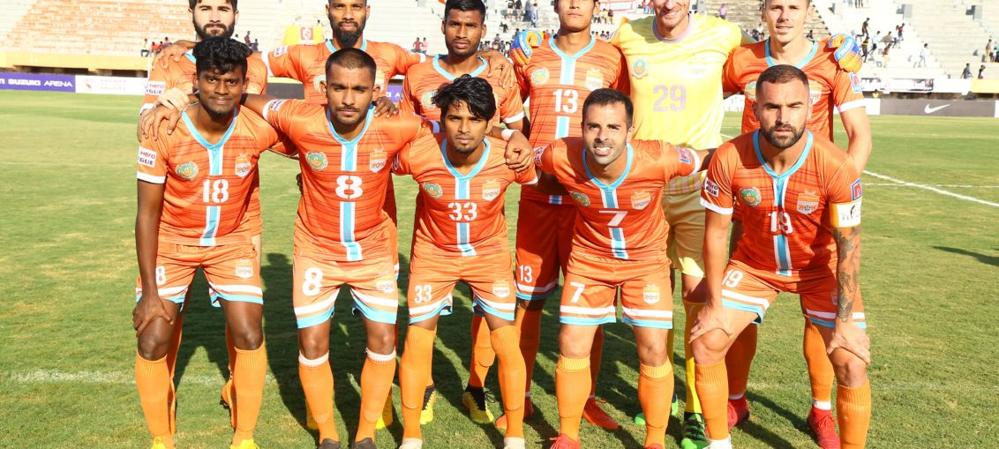

Posted at Date: February 24, 2019
Credit : রাইট স্পোর্টস ওয়েব ডেস্ক
মোহনবাগানকে উড়িয়ে খেতাবের আরও কাছে চেন্নাই

মোহনবাগান সমর্থকদের চেয়েও ইস্টবেঙ্গলের সমর্থকরা বোধহয় বেশি চেয়েছিলেন চেন্নাই সিটি এফসি-র হার! কিন্তু, আই লিগ খেতাবের লক্ষ্যে দ্রুত এবং সুনিশ্চিত দৌড় অব্যাহত চেন্নাইয়ের। রবিবার নিজেদের মাঠে মোহনবাগানকে হারাল ৩-১। আর, ১৮ ম্যাচে ৪০ পয়েন্টে পৌঁছে ইস্টবেঙ্গলের থেকে এগিয়ে গেল ৮ পয়েন্টে। দুটি ম্যাচ বেশি খেলেছে চেন্নাই, ঠিক। কিন্তু, ইস্টবেঙ্গল পরের দুটি ম্যাচ জিতলেও পৌঁছবে ৩৮-এ, থেকে যাবে দু-পয়েন্টের ফারাক। এই ২০১৮-১৯ মরসুমে এই পার্থক্য মুছে ফেলা এখন শুধু কঠিন নয়, প্রায়-অসম্ভব।
জয়ী দলের হয়ে গোল করলেন যথাক্রমে নেস্তর গোরদিও (৮), সান্দ্রো রোদরিগেজ (১৫) এবং পেদ্রো মানজি (২৩)। মোহনবাগান ২৩ মিনিটেই ০-৩ পিছিয়ে। সেখান থেকে অতি বড় সমর্থকও আশা করেননি যে, নেরোকার মতো তিনগোলে পিছিয়ে তিনগোলই শোধ দেবে সবুজমেরুন। উইলিয়াম লালনুফেলা ৩৭ মিনিটে ব্যবধান কমিয়েছিলেন। দ্বিতীয়ার্ধে আর কোনও দিকেই গোল হয়নি। উল্টে, লাল কার্ড দেখে মাঠের বাইরে শিলটন পাল। শেষ ১৩ মিনিট এবং অতিরিক্ত সময় মোহনবাগানকে খেলতে হল দশজনে। ৪৬ মিনিটে চেন্নাইয়ের রিজার্ভ বেঞ্চ থেকে লাল কার্ড দেখেছিলেন থাঙ্গালাকাথ। তাতে মাঠের ভেতর চেন্নাইয়ের খেলায় কোনও প্রভাব পড়েনি, স্বাভাবিকভাবেই।
লিগজয়ের দৌড় থেকে আগেই ছিটকে গিয়েছিল মোহনবাগান। মরসুমের মাঝপথে যখন স্বপ্নগুলো শেষের দিকে হাঁটতে শুরু করেছিল, শঙ্গকরলাল চক্রবর্তীর জায়গায় এসেছিলেন খালিদ জামিল। মিনার্ভা এবং নেরোকার বিরুদ্ধে জয়ের পর ইস্টবেঙ্গলের কাছে হেরে ছন্দপতন। খালিদের দ্বিতীয় হার এল সম্ভাব্য চ্যাম্পিয়নদের বিরুদ্ধে, রবিবার জওহরলাল নেহরু স্টেডিয়ামে যারা চার্চিল ব্রাদার্সকে ছিটকেই দিল খেতাবি লড়াই থেকে। বাকি দুটি ম্যাচ জিতলেও সর্বোচ্চ পয়েন্ট হতে পারে চার্চিলের ৩৭, যা এখনই পেরিয়ে গিয়েছে চেন্নাই। তাদের পরের খেলাও চার্চিলের বিরুদ্ধেই। আই লিগের সর্বোচ্চ গোলদাতা হিসাবে উইলিস প্লাজাকে পেরিয়ে গেলেন চেন্নাইয়ের পেদ্রো মানজি, ১৯ গোল করে। শেষ দুটি ম্যাচে প্লাজা (১৮) না পেদ্রো, সর্বোচ্চ গোলদাতার ট্রফিরও লড়াই। দুপুরে ড্র করে রিয়েল কাশ্মীর সামান্য হলেও খুশির ছোঁয়া এনেছিল কলকাতায় লালহলুদ শিবিরে। কিন্তু, সেই খুশি বেশিক্ষণ স্থায়ী হল না। মরসুমে দুবারই চেন্নাই সিটির কাছে হারের পর তেমন আশা করাটাও অন্যায়। লিগ চ্যাম্পিয়ন হতে হলে সেরা দলের বিরুদ্ধে পয়েন্ট কাড়তে না পারলে আর চ্যাম্পিয়ন হওয়ার স্বপ্ন দেখা কেন!
ইস্টবেঙ্গল সোমবার ঘরের মাঠ যুবভারতীতে খেলতে নামবে আইজল এফসি-র বিরুদ্ধে, এবারের মরসুমে নিজেদের মাঠে শেষ ম্যাচে। পরের তিনটি ম্যাচই বাইরে, যথাক্রমে রিয়েল কাশ্মীর, মিনার্ভা এবং গোকুলমের বিরুদ্ধে। লিগে নির্দিষ্ট সময়ে কম ম্যাচ খেললে পিছিয়ে পড়তে হয় পয়েন্টে এবং অনাবশ্যক চাপ তৈরি হয়। পাহাড়ি দলের কাছে পাহাড়ে গিয়ে হেরে এসেছিল ইস্টবেঙ্গল। ঘরের মাঠে সোমবার সেই হারের শোধ নিতে পারলেও খেতাবের স্বপ্ন উজ্জ্বল হওয়ার সম্ভাবনা বেশ কম। আকবর নওয়াস এবং তাঁর দলের স্পেনীয় তারকারা বরঞ্চ চার্চিল ম্যাচকেই লক্ষ্য করে এগোবেন এবার। আগামী ১ মার্চ চার্চিলকে হারালেই তারা খেতাবের খুব কাছে! আর আগামী দুটি ম্যাচের কোনও একটিতেও যদি পা ফস্কায় লালহলুদের, ম্যাচ হাতে থাকতেই খেতাব পাড়ি জমাবে চেন্নাইতে!
Top Stories

Calcutta Sports Journalists' Club requests the pleasure of your company at its annual awards functionMore...

Jasprit Bumrah has been declared fit and he will now be available for selection for India's third Test against England at Trent Bridge. More...

Ronaldo has increased Juventus' standing among Europe's elite. More...